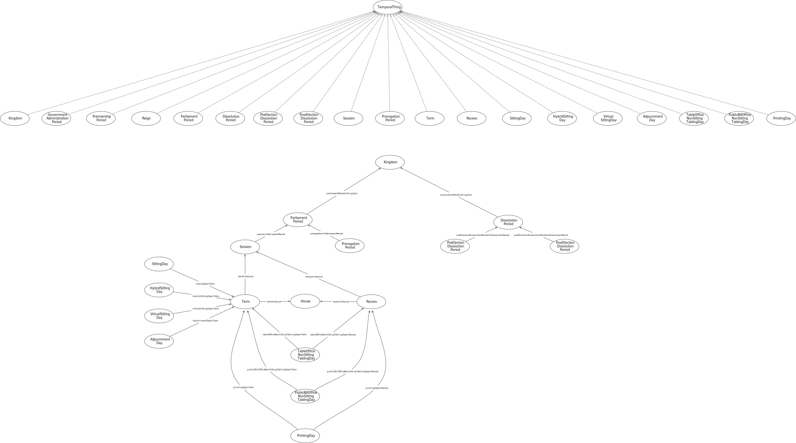

IRI: http://parliament.uk/ontologies/time-period/AdjournmentDay
IRI: http://parliament.uk/ontologies/time-period/DissolutionPeriod
IRI: http://parliament.uk/ontologies/time-period/GovernmentAdministrationPeriod
IRI: http://parliament.uk/ontologies/time-period/House
IRI: http://parliament.uk/ontologies/time-period/Kingdom
IRI: http://parliament.uk/ontologies/time-period/ParliamentPeriod
IRI: http://parliament.uk/ontologies/time-period/ParliamentarySittingDay
IRI: http://parliament.uk/ontologies/time-period/ParliamentarySittingDayType
IRI: http://parliament.uk/ontologies/time-period/PostElectionDissolutionPeriod
IRI: http://parliament.uk/ontologies/time-period/PreElectionDissolutionPeriod
IRI: http://parliament.uk/ontologies/time-period/PremiershipPeriod
IRI: http://parliament.uk/ontologies/time-period/ProrogationPeriod
IRI: http://parliament.uk/ontologies/time-period/Recess
IRI: http://parliament.uk/ontologies/time-period/Reign
IRI: http://parliament.uk/ontologies/time-period/Session
IRI: http://parliament.uk/ontologies/time-period/TemporalThing
IRI: http://parliament.uk/ontologies/time-period/adjournmentDayInHouse
IRI: http://parliament.uk/ontologies/time-period/adjournmentDayInSession
IRI: http://parliament.uk/ontologies/time-period/dissolutionPeriodInKingdom
IRI: http://parliament.uk/ontologies/time-period/groupedAs
IRI: http://parliament.uk/ontologies/time-period/hasParliamentarySittingDayType
IRI: http://parliament.uk/ontologies/time-period/parliamentPeriodInKingdom
IRI: http://parliament.uk/ontologies/time-period/parliamentarySittingDayInHouse
IRI: http://parliament.uk/ontologies/time-period/parliamentarySittingDayInSession
IRI: http://parliament.uk/ontologies/time-period/postElectionDissolutionPeriodInDissolutionPeriod
IRI: http://parliament.uk/ontologies/time-period/preElectionDissolutionPeriodInDissolutionPeriod
IRI: http://parliament.uk/ontologies/time-period/prorogationInParliamentPeriod
IRI: http://parliament.uk/ontologies/time-period/recessInHouse
IRI: http://parliament.uk/ontologies/time-period/sessionInParliamentPeriod
IRI: http://parliament.uk/ontologies/time-period/isBillOfficeTablingDay
IRI: http://parliament.uk/ontologies/time-period/isPrintingDay
IRI: http://parliament.uk/ontologies/time-period/isTableOfficeTablingDay
This HTML document was obtained by processing the OWL ontology source code through LODE, Live OWL Documentation Environment, developed by Silvio Peroni.